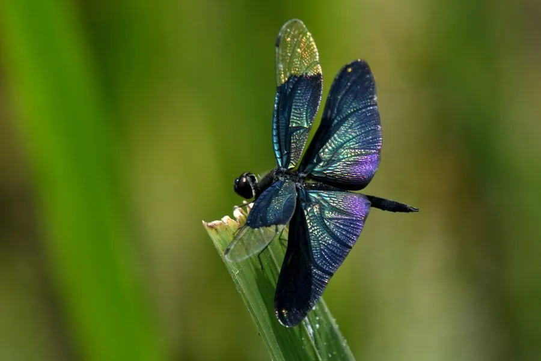

昆虫 · 动物界
黑丽翅蜻 Rhyothemis fuliginosa

翅膀呈深蓝黑色金属光泽的蜻蜓，飞行时像一片会动的黑叶子，常见于池塘和湿地，中国和东亚的美丽蜻蜓。
- 分类
- 门节肢动物门纲昆虫纲目蜻蜓目科蜻科属丽翅蜻属
- 栖息环境
- 池塘、沼泽、水田与缓流边缘，常在水草和枝条上停歇
- 地理分布
- 中国大部分地区、日本和朝鲜半岛
- 保护级别
- 暂无评估；湿地指示物种
物种志
黑丽翅蜻成虫体长约 3–3.5 cm，翅展约 7 cm，翅面大部分呈深蓝黑色，在阳光下泛出蓝紫色或金属光泽，像一片会动的黑叶子；身体较细，腹部黑色带浅色斑，复眼大。雌雄翅色相近，雄虫翅面的金属光泽更明显。
它生活在池塘、沼泽、水田和缓流边缘，成虫飞行轻缓，常在水面上空盘旋，也会停在水草和枝条上，捕食蚊蝇等小飞虫。雌虫点水产卵，幼虫生活在浅水和泥底，捕食水生小动物。黑丽翅蜻分布于中国大部分地区、日本和朝鲜半岛，是东亚湿地中外观最独特的蜻蜓之一，因翅色美丽而受到观察者的喜爱，对水体环境变化较敏感，可作为湿地生态的指示物种。
形态与习性
- 食性捕食蚊蝇等小飞虫；幼虫捕食水生小动物
- 体长约 3–3.5 cm，翅展约 7 cm
- 识别翅面深蓝黑色，有金属光泽，像黑叶子
- 习性飞行轻缓，常在水面上空盘旋
- 分布中国大部分地区、日本和朝鲜半岛
趣味知识
- 黑丽翅蜻的翅膀深蓝发亮，飞起来像一片会动的黑叶子。
- 它常在水草和枝条上停歇，翅面在阳光下泛出蓝紫色。
- 黑丽翅蜻是东亚湿地中外观最独特的蜻蜓之一。